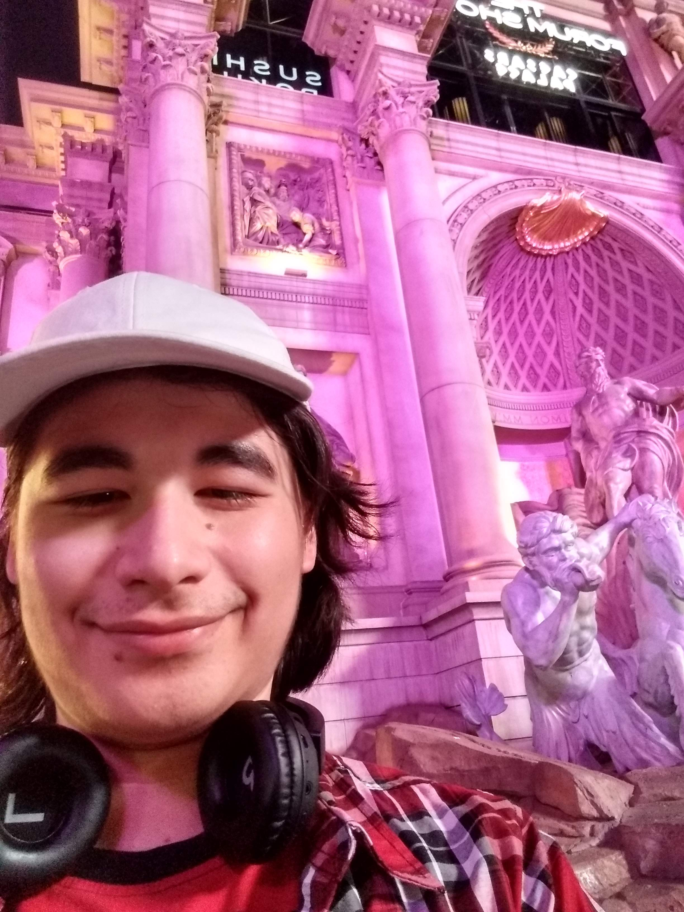

Samuel Rus Sparenga
Me in Las Vegas - July 6, 2019
A Brief History of Samuel
I was born in Los Angeles on May 25, 2003 and I moved a lot throughout Southern California. For instance, only 10 years ago, I lived in West Covina. Then around 2013, my family moved again to Moreno Valley where I've lived since. I got into STEM from a flyer in 5th grade and went through the process of becoming part of it.
Top 10 Trivia
- I am potentially the valedictorian of VVHS Class of 2021
- I am doubled-jointed at the fingers
- I love vaporwave, 2000s music, and classical music
- I love Neon Genesis Evangelion
- I can put my foot behind my head
- I once studied cryptozoology in elementary school
- I aspire to double-major into Artifical Intelligence & International Relations
- I love Sid Meier's Civilization
- I've read all of Arthur C. Clarke's Space Odyssey series
- I want to have a minor degree in philosophy
Links to Social Media
So rather then list all my social media handles, I used Plu.us to organize all of them.
The Connections of Samuel SparengaTop 5 Colleges I'm Interested Into
- Carnegie Mellon University
- I want to do something involving Artifical Intelligence, and some research showed that this school has the best programs for Artifical Intelligence.
- Massachusetts Institute of Technology
- As a school of internationally high status, I would particularly do well in their hyper math-based environment and culture.
- University of California - Berkeley
- This school reminds me of a Western Ivy League, only much more closer to home.
- Princeton University
- As everyone's to-go school for generations, this is definitely my choice if I needed a new experience on the East.
- University of Southern California
- This is probably my first choice for a safety school, but the campus would distract me since it is in the midst of LA.